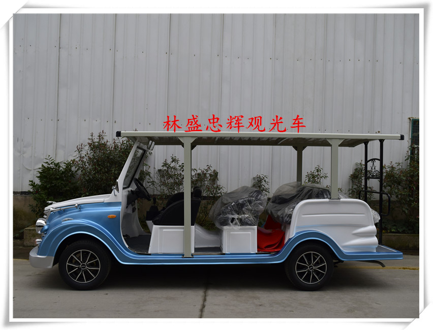
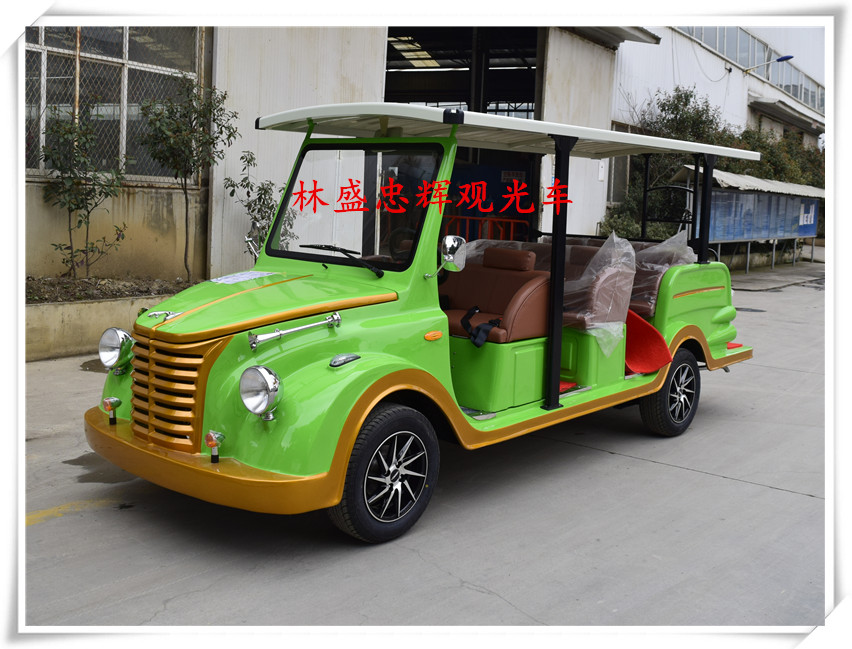

一个好的观光电动车电池能使用好几年，自然也就能节省更多的钱。但是事实上，观光电动车电池行业良莠不齐。有的质量超然，有的则很差，前者自然能为消费者省钱，后者不要说省钱，能省心就不错了。那么，如何判断林盛忠辉观光车电动车电池是否继续放心可用呢？
盲目换电池不可取
近段时间随着天气变冷，有些车主慢慢感觉自己的电动车似乎不那么“给力”了，其实电瓶车冬天不给力，其实是与气温有关系。目前，市面上大多数电动车使用的都是铅酸蓄电池，铅酸蓄电池在温度25℃左右时可正常蓄电，温度下降时铅酸蓄电池各种物质的活性降低，电容变得困难，蓄电能力随之变差。
维修电瓶车多年的李师傅介绍，冷天的时候，电瓶车电池的容量变小了，骑不了多长时间是正常现象。等到天气暖和了，电动车又会“自动”恢复了。所以说随着天气变冷，电瓶的电量下降是正常的。
提醒广大市民，电瓶车冷天电池不给力，千万不要以为是自家的电动车电池坏了而盲目更换电池，应拿去正规的店里检查后再做决定。
哪种电池需要更换
1、电池充不进电
如果你感觉你的电动自行车电池充不了电，那么首先检查充电回路的连接是否可靠，检查连线与插头接触是否完好，认真检查插座和插头是否有“打火”烧弧现象，有无线路损伤断线等。
如果都没问题，那么再检查充电器有无损坏，充电参数是否符合国家标准要求。还没有问题的话，那么就可能是电池受损，如果修复后也没有好转，需要更换一块新电池了。
2、电池无论是充电还是放电，其外壳都严重发热
发热的原因是极板上的活性物质严重脱落，内阻增大，发热量增大。这时如果打开电池安全阀检查，会看到电解液“发黑”，严重失效时无法修复。这时，电池自放电很快，有时充电后很快就没电了。
3、充电几十分钟就会充满，骑行不到几小时就没电了
这个时候就要重新换电池了，并且在选择电池的时候尽量选择高品质，口碑好的品牌电池。
电池出现问题的原因很多，但除了鼓包、“脱粉”、极板断格、短路、外壳损坏等情况外，一般都不用更换，只要维修就能继续使用。因此，林盛忠辉观光车提醒广大电动车用户，电池出现了一定要找专业的维修店进行检验，在必须更换电池的情况下，一定要选择好电池。
相关标签：电动观光车，